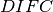

To get a good calibration you will want good statistics with calibration data. For most of the calibration algorithms, this means having enough statistics in a single pixel to fit individual peaks or to cross-correlate data. Some of the calibration algorithms also require knowing the ideal positions of peaks in d-spacing. For these algorithms, it is not uncommen to calibrate the instrument, refine the results using a Rietveld program, then using the updated peak positions to calibrate again. Often the sample selected will be diamond.
This technique of calibration uses a reference spectrum to calibrate
the rest of the instrument to. The main algorithm that does this is
GetDetectorOffsets whose
InputWorkspace is the OutputWorkspace of CrossCorrelate. Generically the workflow is
ReferenceSpectra you found in the last step.OffsetsWorspace. See below for how to save,
load, and use the workspace.These techniques require knowing the precise location, in d-space, of diffraction peaks and benefit from knowing more. GetDetOffsetsMultiPeaks and PDCalibration are the main choices for this. Both algorithms fit individual peak positions and use those fits to generate the calibration information.
The workflow for GetDetOffsetsMultiPeaks is identical to that of GetDetectorOffsets without the cross-correlation step (5). The main difference in the operation of the algorithm is that it essentially calculates an offset from each peak then calculates a weighted average of those offsets for the individual spectrum.
The workflow for PDCalibration differs significantly from that of the other calibration techniques. It requires the data to be in time-of-flight, then uses either the instrument geometry, or a previous calibration, to convert the peak positions to time-of-flight. The individual peaks fits are then used to calculate  values directly. The benefit of this method, is that it allows for calibrating starting from a “good” calibration, rather than returning back to the instrument geometry. The steps for using this are
OutputCalibrationTable is a TableWorkspace. See
below for how to save, load, and use the workspace.CalibrateRectangularDetectors will do most of the workflow for you, including applying the calibration to the data. While its name suggests it is only for a particular subset of detector types, it is not. It has many options for selecting between GetDetectorOffsets and GetDetOffsetsMultiPeaks.
There are two basic formats for the calibration information. The legacy ascii format is described in CalFile. The newer HDF5 version is described alongside the description of calibration table.
Saving and loading the HDF5 format is done with SaveDiffCal and LoadDiffCal.
Saving and loading the legacy format is done with SaveCalFile and LoadCalFile. This
can be converted from an OffsetsWorkspace to a calibration table
using ConvertDiffCal.


The first thing that should be done is to convert the calibration
workspace (either table or OffsetsWorkspace to a workspace of
values to inspect using the instrument view. This can be done using
CalculateDIFC. The values of
should vary continuously across the detectors that are close to each
other (e.g. neighboring pixels in an LPSD).
You will need to test that the calibration managed to find a reasonable calibration constant for each of the spectra in your data. The easiest way to do this is to apply the calibration to your calibration data and check that the bragg peaks align as expected.
CalibrationFile, the CalibrationWorkspace, or OffsetsWorkspace.Further insight can be gained by comparing the grouped (after aligning and focussing the data) spectra from a previous calibration or convert units to the newly calibrated version. This can be done using AlignAndFocusPowder with and without calibration information. In the end, a Rietveld refinement is the best test of the calibration.
While many of the calibration methods will generate a mask based on the detectors calibrated, sometimes additional metrics for masking are desired. One way is to use DetectorDiagnostic. The result can be combined with an existing mask using
BinaryOperateMasks(InputWorkspace1='mask_from_cal', InputWorkspace2='mask_detdiag',
OperationType='OR', OutputWorkspace='mask_final')
To create a grouping workspace for SaveDiffCal you need to specify which detector pixels to combine to make an output spectrum. This is done using CreateGroupingWorkspace. An alternative is to generate a grouping file to load with LoadDetectorsGroupingFile.
This approach attempts to correct the instrument component positions based on the calibration data. It can be more involved than applying the correction during focussing.
Category: Calibration